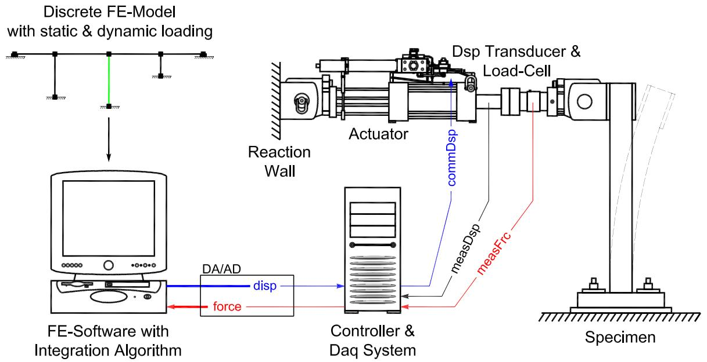
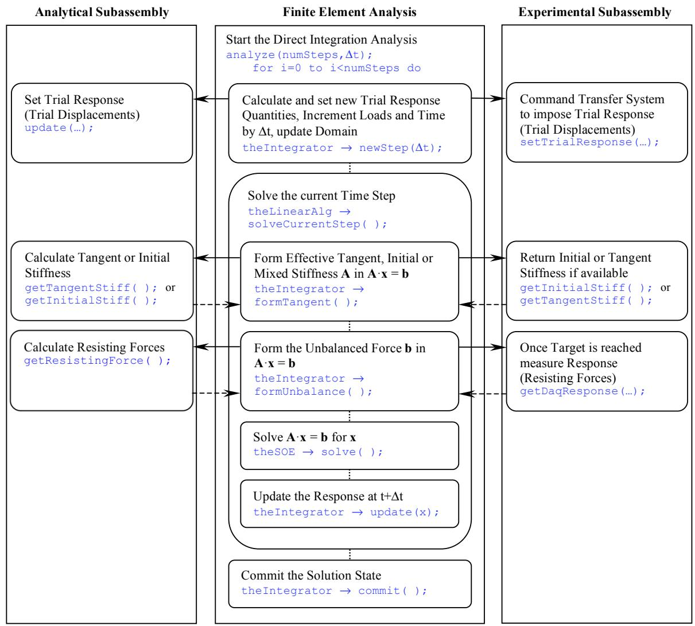

2 混合模拟基础
2.1 引言
目前，有几种成熟的方法可以进行实验室测试以评估结构系统和/或其组件的地震行为。第一种也是最常见的技术是准静态测试方法，其中被调查的结构受到由作动器施加的预定荷载或位移历史的作用。通过对一系列试件施加相同的荷载或位移历史，可以很容易地识别材料特性、细节、边界条件、加载速率和其他因素系统变化的影响。虽然此类试验相对容易且经济地执行，但施加在试件上的总体需求与观察到的损伤没有直接关系，这引发了对试件在特定项目情况下是否被欠测试或过测试的质疑。此外，施加的荷载模式通常不足以模拟结构在实际地震事件期间经历的不断变化的荷载分布。
振动台试验是第二种实验室试验形式。它们能够模拟与特定地震期间存在的条件非常相似的条件。这些试验提供了关于特定地面运动引起的动态响应的重要数据，考虑了被测试结构的惯性和能量耗散特性以及几何非线性、局部屈服和损伤以及构件失效对结构响应的影响。然而，对于振动台试验，通常需要完整的结构系统，并且试件需要仔细按照动态相似律的规则建造。另一方面，控制需要除振动台之外的额外作动器的实时动态构件试验特别具有挑战性，是另一个高级研究课题。到目前为止，只有少数振动台具有对全尺寸结构施加准确基础运动的能力。大多数可用振动台的有限容量和尺寸对可测试试件的尺寸、重量和强度施加了重大限制。因此，通常需要缩小比例或高度简化的试件，这使许多振动台试验的真实性受到质疑。
第三种方法是混合模拟，以前也称为拟动力试验方法或在线计算机控制试验方法。在这种试验测试技术中，模拟是基于同时考虑结构系统的数值和物理组件的模型的运动控制方程的逐步数值解来执行的。与传统的计算建模和模拟（整个结构都是分析求解的）相反，混合模拟方法从真实结构或其组件的实验室测试中获得对应于结构系统刚度、能量耗散或质量特性的力。如果混合模拟方法用于典型的准静态、基于位移的试验，则试件的质量和粘性阻尼特性是数值建模的，并且基于当前物理和数值建模部分结构的状态，在每个步骤计算结构对指定动态激励的增量位移响应。在模拟期间，整体混合模型的物理部分使用计算机控制的作动器在一个或多个实验室中进行测试，而数值部分则在一个或多个计算机上同时分析。由于模拟的动态方面是数值处理的，因此可以使用标准的计算机控制作动器以准静态方式进行此类试验。因此，混合模拟可以被视为一种先进的基于作动器的测试形式，其中荷载历史是在给定系统受到特定地面运动的试验过程中确定的。或者，混合模拟也可以被视为传统的有限元分析，其中结构某些部分的物理模型嵌入在数值模型中。
下一节讨论了利用混合模拟而不是准静态或振动台试验方法进行试验研究所获得的各种优势。此外，还总结了混合模拟中仍需解决的一些挑战。事实上，主要挑战之一——缺乏混合模拟开发和部署的通用框架——为后续章节中介绍的工作提供了基础。之后，简要介绍了自三十年前发明以来混合模拟测试技术的发展历史。下一节概述了执行混合模拟所需的基本组件和程序。随后解释和比较了不同的使用模式，如本地与地理分布以及慢速与快速试验。最后，该章简要总结了混合模拟中遇到的数值和试验误差，并解释了此类误差如何影响试验。
2.2 优势和挑战
优势：
由于混合模拟测试技术结合了分析和试验方法来研究结构系统，并且可以在比实际时间尺度慢多达两个数量级的扩展时间尺度上执行，因此获得了许多优势。以下列表总结了一些最重要的优势：
在混合模拟中，荷载（运动方程的右侧）是分析定义的，这提供了研究结构在各种荷载条件下行为的能力。包括多点激励的地震事件；波浪产生的水动力荷载条件；移动车辆引起的交通和冲击荷载；风产生的气动荷载和爆炸荷载都可以通过在混合模型的分析部分中纳入它们来模拟，而无需改变试验的物理部分。
混合模拟方法使研究人员能够将大型结构细分为子组件，其中行为（1）已被充分理解并可以使用有限元模型可靠地建模，以及（2）高度非线性和/或数值上难以模拟，因此从实验室的物理测试中获得。这通过用实际物理组件替代数值组件来减少建模不确定性。因此，混合模拟可以被视为一种先进的构件测试形式，它不像振动台试验那样面临施加适当边界条件的困难。
如果混合模拟方法用于典型的准静态、基于位移的试验并在扩展时间尺度上执行，则可以进行全尺寸试件的动态测试。大规模测试还消除了振动台试验中遇到的缩放困难。
物理子组件的尺寸和重量仅受可用实验室空间和强力地板及反力框架强度的限制。此外，试验试件的强度仅受试验设施可用传递系统（作动器）容量的限制。
由于混合模拟可以在扩展时间尺度上执行，准静态测试设备（包括作动器、伺服阀和液压动力源）通常足以进行测试。通常此类设备在现有试验设施中也容易获得。这种可能性以及仅对结构系统的关键组件进行物理测试的可能性使混合模拟成为一种非常经济的实验室试验技术。
慢速试验允许在混合模拟期间仔细检查试件。这可以提供对试件行为的重要见解，作为检测损伤开始和跟踪整个模拟过程中损伤进展的手段。
• 混合模拟可以以比实际时间尺度慢两个数量级到比实际时间尺度快几倍之间的任何速率执行，具体取决于相似律要求。
试验和分析子组件可以地理分布，使研究人员能够利用不同实验室的不同能力。
• 几何非线性效应、三维效应、土-结构相互作用和土-桩相互作用都可以纳入混合模型的分析部分。
• 混合模拟可用于执行智能振动台试验，其中实时控制模拟器平台以研究调谐质量阻尼器或土-结构相互作用等问题。
挑战：
除了混合模拟的许多优势和机会外，该方法还面临一些仍需通过对技术本身进行进一步研究和执行特定混合模拟来评估和验证的挑战。以下列表总结了其中一些挑战：
混合模拟的开发和部署因缺乏跨各种实验室和计算环境进行试验的通用框架而受到相当大的阻碍。迄今为止，混合模拟的每次实现不仅是针对特定问题的，而且严重依赖于试验场地和使用的控制和数据采集系统。这种高度定制的软件实现很难适应不同的结构问题，甚至更难移植到不同的实验室。因此，非常需要一种独立于环境、稳健、透明且易于扩展的软件框架。
为了保证从混合模拟获得的结果有效、可靠和准确，必须最小化和纠正误差对结果的污染。在混合模拟中，误差可以在试验的各个阶段引入到求解过程中，可以将它们归类为数值误差与试验误差，或者替代地归类为随机误差与系统误差。虽然数值误差和随机误差不会显著影响结构的响应，通常可以忽略，但试验误差和系统误差可能在混合模拟过程中累积并导致不良结果甚至不稳定。如第2.3节所述，许多研究人员已经彻底研究了各种误差对结构响应的影响。Shing和Mahin（1983, 1984, 1990）专注于研究由模型抽象和时间步进积分算法引入的数值误差。Thewalt和Mahin（1987）研究并总结了由传递和数据采集系统的硬件组件引入的试验误差。Mosqueda（2003）对试验误差进行了广泛的数值模拟，以研究它们对混合模拟结果的影响。他推导了时间延迟误差和试验设置（包括试件、传递系统和反力墙）动态行为的线性传递函数形式的分析模型，以研究它们对传递系统整体性能的影响。
由于Mosqueda（2003）已经编制了混合模拟误差和可用误差补偿技术的综合总结，这里仅为方便起见简要列出数值和试验误差。
误差的第一个来源是结构的空间离散化，这是获得混合模拟所基于的半离散有限自由度模型所必需的。由于这些有限自由度模型是连续真实世界结构的近似，信息会丢失，并且在建模过程中不可避免地会将数值误差引入混合模拟。关于能量耗散和其他分析参数的假设进一步影响此类误差。
其他数值误差的来源是用于求解非线性运动方程的积分和平衡求解算法。如果为手头的混合模拟问题选择了不适当的算法和/或此类算法的参数（例如，积分时间步长、算法阻尼等），则此问题可能会被放大。此外，不同的积分方案具有不同的误差传播特性，这些特性可以在整个试验过程中放大试验误差。
误差的第三个来源是传递系统将计算的响应量施加到试验子组件上的方式。如前所述，连续加载程序通常比保持和斜坡程序获得更好的精度，因为它们消除了力松弛和作动器粘滑误差。此外，如果物理子组件表现出速度相关行为，则传递系统实时施加计算的响应量以最小化误差并获得准确结果至关重要。
由传递系统产生的试验误差是影响混合模拟的所有误差中最严重的。调整不良的传递系统无法准确施加计算的响应量，并引入系统误差，如下冲、过冲、滞后或反馈回路不稳定。此外，传递系统与其支撑反力墙的相互作用可能导致额外的系统误差。由于系统误差改变了混合系统的能量耗散，进而可能使其不稳定，因此必须不惜一切代价最小化或补偿这些误差。
最后，测量结构响应的仪器设备和数据采集系统也可能引入试验误差。仪器的分辨率、仪器产生的噪声以及数据采集系统中的校准误差可能产生非常不准确或不正确的测量结果，这些结果会显著影响混合模拟并最终导致不良试验结果。
2.3 历史
在寻求评估大型结构动态（特别是地震）性能的新方法时，几位研究人员于1970年代初开始开发混合模拟测试技术。第一篇正式出版物直到1975年才出现，当时Takanashi等人提出了混合模拟测试方法，当时称为"在线试验"，作为振动台试验的替代试验技术。从那时起，已经开发了大量这种试验方法及其伴随数值算法的变体，以提高效率、准确性和性能。本节其余部分简要总结了此类进展，这些进展与开发和更快、更可靠的试验和计算硬件所取得的进展密切相关。
由于混合模拟试验结果可能受到试验误差的显著影响，在初始发展结束后不久，就对随机和系统误差的传播进行了深入研究（Mahin和Williams 1980；Shing和Mahin 1983）。此外，Thewalt和Mahin（1987）以及Mosqueda等人（2005）对混合模拟中的误差提供了出色的解释和总结，包括基于建模、实现技术和试验设置的误差。大约在同一时间，在线计算机控制试验方法在美国也开始被称为拟动力试验技术。
1984年，Shing和Mahin对混合模拟中运动方程积分的数值算法进行了首次系统研究。他们研究了稳定显式方案的改进和实现，包括基于Newmark方法族（Newmark 1959）的显式Newmark方法，该方法至今仍广泛用于执行混合模拟。观察到在结构试验期间，损伤（因此非线性行为）通常发生在整个结构的特定、有限区域。因此，Dermitzakis和Mahin（1985）建议利用子结构技术将结构划分为试验和数值子组件并执行分区混合模拟。此外，为了克服应用于分区混合模拟的显式积分方案的稳定性限制，Dermitzakis和Mahin（1985）提出了基于Hughes和Liu（1978）工作的混合隐式-显式算法。不久之后，Mahin和Shing（1985）发表了一篇论文，出色地总结了当时美国混合模拟的所有活动。它介绍了拟动力试验方法的基本方法，包括数值积分算法、实现细节以及该技术的功能和局限性。
在其初始发展之后，混合模拟在美国和日本都取得了很大进展。一系列论文（Nakashima 1985-1989）研究了拟动力试验方法的稳定性和准确性。其中一篇出版物（Takanashi和Nakashima 1987）与Mahin和Shing（1985）的论文一样，全面总结了当时日本混合模拟的所有活动。大约在同一时间，Thewalt和Mahin（1987）在美国取得了重大进展，他们执行了首次多方向混合模拟，开发了力和力/位移混合控制策略，并提出了"有效力"动态试验方法。然而，对于多自由度的多方向混合模拟，显式条件稳定积分方法的使用很快变得不切实际。因此，Thewalt和Mahin（1987）开发了基于Hilber等人（1977）的α方法的第一种用于混合模拟的隐式无条件稳定积分方法，并利用测量抗力的模拟反馈信号而不是数值平衡迭代。
在使用子结构技术进行拟动力试验时，Nakashima还认识到迫切需要一种有效的无条件稳定数值算法来积分大型多自由度混合模型的运动方程。他为混合模拟提出了一种专门的算子分裂（OS）方法（Nakashima 1988），该方法基于Hughes关于隐式-显式预测-校正方案的工作（Hughes等人1979）。OS方法的稳定性和准确性特性不久后被研究并发表（Nakashima等人1990）。发现与现有显式方法相比，OS方法具有改进的稳定性和误差传播特性，同时不需要任何平衡迭代。1989年，Mahin等人编制了关于混合模拟现状和未来方向的更新总结。
由于被测试结构系统的复杂性不断增加以及分区混合模拟的数量不断增加，专门为混合模拟开发的隐式无条件稳定积分方案的发展是不可避免的。两位以 somewhat different approaches 开发和研究此类方案的研究人员是Dorka和Shing。前者提出了一种基于隐式Newmark方法的积分方案，该方案在算法的内循环中利用子步进方法（Dorka和Heiland 1991；Dorka 2002；Bayer等人2005）。这种子步进可以被解释为力反馈的数字实现，可与Thewalt和Mahin（1987）的模拟实现相媲美。后者的积分方法基于Hilber等人（1977）的α方法，并采用具有初始刚度迭代的平衡求解算法（Shing等人1991；Shing和Vannan 1991）。此外，平衡求解算法利用增量折减因子来最小化虚假加载/卸载循环的发生。该算法随后用于执行同心支撑框架的分区拟动力试验（Shing等人1994），并被扩展为在混合模拟期间自适应调整时间步长（Bursi等人1994）。
通过利用改进的硬件（如动态作动器和数字伺服机构）实现了混合模拟用于实时测试的首次实现（Nakashima等人1992）。此外，这些研究人员采用了一种交错求解策略，也称为交错积分，以提高计算效率。
1994年，Schneider和Roeder改编了DRAIN-2D有限元分析软件以执行混合模拟。这是有限元软件包首次专门为混合模拟进行修改，而不是利用针对特定问题的实现。此外，研究人员引入了用试验单元替代数值单元的概念，这些试验单元代表在实验室中物理测试的结构部分。同样在1994年，Thewalt和Roman开发了一种从测量的位移和力估计试验子组件切线刚度矩阵的技术。他们的最小更新方法基于Broyden-Fletcher-Goldfarb-Shanno（BFGS）算法，该算法属于拟牛顿方法族，参见（Bathe 1996）。
大约在同一时间，Shing等人（1996）发表了一篇论文，从用户的角度介绍了混合模拟测试技术，并提供了最新发展的更新总结。此外，Bursi和Shing（1996）编制了现有用于混合模拟的隐式积分方案的良好比较。更详细地研究和比较了Shing的修正隐式α方法和Nakashima的α-OS方法。α-OS方案的误差传播分析（此前一直缺失）由Combescure和Pegon（1997）进行。为了利用各种设备和不同结构试验设施的独特能力，Campbell和Stojadinovic（1998）提出在互联网连接的实验室网络中地理分布结构子组件。同年，Magonette和Negro（1998）编制了欧洲结构评估实验室（ELSA）混合模拟最新发展和活动的综合总结。
为了改进混合模拟的实时执行，Horiuchi等人（1996, 1999）开发了基于利用多项式外推的作动器响应预测的作动器延迟补偿技术。从那时起，实时混合模拟迅速普及，导致越来越多的研究人员从事这一课题。Darby等人（1999, 2001）开发并执行了几次实时分区混合模拟，利用控制系统方法。此外，他们提出了一种用于非线性问题的实时兼容积分算法，该算法在求解过程中采用减少的Ritz向量集（Blakeborough等人2001）。此外，Nakashima和Masaoka（1999）首次利用数字信号处理器（DSP）将作动器信号生成任务与响应分析任务分离。他们采用基于Horiuchi等人（1996）工作的外推-插值程序来生成连续位移信号并桥接两个任务的不同时间尺度。另一方面，Magonette（2001）将研究重点放在开发一种无需实时要求即可执行连续混合模拟的系统上。他成功证明，连续混合模拟在避免力松弛和通过消除作动器保持阶段提高力测量精度方面非常有效。
2002年，Chang提出了一种基于Newmark方法族的无条件稳定显式积分方案。然而，由于该算法在多个地方需要质量矩阵的逆，因此不能用于求解具有奇异质量矩阵的混合模型的运动方程。Mosqueda（2003）开发的三环架构首次允许执行具有多个子组件的连续地理分布混合模拟。与以前利用保持和斜坡加载程序的地理分布混合模拟相比，可以显著减少执行时间并消除力松弛问题。此外，Mosqueda（2003）提出了几个误差指标来评估混合模拟的准确性和效率。2004年，Bonelli和Bursi开发了基于Chung和Hulbert（1993）广义-α方法的隐式和显式积分方案。这些积分方法提供了算法数值能量耗散特性的改进调整。Pinto等人（2004）执行了结构分析部分和试验部分都具有非线性的首次分区混合模拟。研究团队开发了一种新颖的并行跨场积分算法来实现这一目标。
由于在此之前混合模拟的大多数实现都是针对特定问题且严重依赖于试验场地，因此启动了几个研究项目来开发用于进行由多个子组件组成的地理分布试验的框架。Pan等人（2005）开发了一种架构，其中一个物理试验在一个地方进行，相关的数值分析在远程位置执行，两个位置通过互联网通信。然而，所提出的系统采用了文件和文件夹共享技术在数值和物理场地之间交换数据，牺牲了性能和灵活性。另一方面，Takahashi和Fenves（2006）开发了一个面向对象的软件框架，由一组相互关联的软件类组成，以便捷、模块化和标准化的方式提供任何分析软件与实验室设备配合执行混合模拟所需的附加功能。此外，该软件框架提供了在实验室和计算站点网络中以标准化方式分布结构子组件的手段。大约在同一时间，Pan及其同事通过用基于网络套接字的数据交换例程替换基于文件的数据交换例程，并利用集中协调器来强制执行不同子组件之间的兼容性和平衡，改进了他们的系统（Pan等人2006）。这种方法与Kwon等人（2005）早些时候建议的方法类似，该方法包括一个求解运动方程的协调器和任意数量的代表混合模型不同子结构的分析和试验静态模块。该系统提供了使用各种商业有限元软件代码来确定各个模块的静态平衡的手段。然而，该系统以及Wang等人（2006）提出的系统都利用了有限元软件包提供的重新启动功能（写入和读取文件），因此显著限制了性能。
由于过去几年全球从事混合模拟的研究人员和用户数量大幅增加，出版物的数量也成倍增加。目前正在进行的一些研究包括力控制和力/位移混合控制策略的开发，以及在模拟期间在力和位移控制之间切换（Elkhoraibi和Mosalam 2007；Wu等人2007）。此外，实时测试继续是混合模拟的主要重点领域之一（Jung等人2007；Mercan和Ricles 2007；Gawthrop等人2007；Ahmadizadeh等人2008；Bonnet等人2008；Bursi等人2008）。
2.4 组件和程序
要执行混合模拟，需要几个关键组件，包括软件和硬件。这些在混合模拟期间相互交互的组件如图2.1所示，下面进行描述。
第一个组件是在计算机上离散化的待分析结构模型，包括静力和动力荷载。在本文介绍的结构分析方法中，使用有限元方法在空间上离散化问题，然后使用时间步进积分算法进行时间离散化。与替代的控制系统方法相比，有限元方法对结构工程师来说更直观，并且可以轻松扩展以执行分区混合模拟（见第3章）。有限离散自由度得到的动力学运动方程是一个二阶时间常微分方程组（见第4章）。
在上述方程中，M是从节点和单元质量矩阵组装的质量矩阵，U&&是结构自由度处的加速度向量，C是粘性阻尼矩阵，\(\dot { \mathbf { U } }\)是结构自由度处的速度向量，\(\mathbf { P _ { r } }\)是组装的单元抗力（取决于位移），\(\mathbf { P }\)是外部施加的节点荷载，\(\mathbf { P _ { 0 } }\)是组装的单元荷载。
第二个所需组件是传递系统，包括控制器和静态或动态作动器，以便时间步进积分算法确定的增量响应（通常是位移）可以施加到结构的物理部分上。对于慢速试验，许多结构试验实验室通常容易获得的相对便宜的准静态测试设备可用于此目的。
第三个主要组件是在实验室中测试的物理试件，包括一个支撑，传递系统的作动器可以对其施加反力。
第四个也是最后一个组件是数据采集系统，包括位移传感器、荷载传感器和加速度计等仪器（仅列出最常见的）。数据采集系统负责测量试件的响应，并将此类试验信息（通常是抗力）返回到时间步进积分算法，以便将求解推进到下一个分析步骤。
由于使用有限元方法来介绍混合模拟的基本概念，因此测试程序按照执行直接积分分析所需的必要步骤进行布置。为了简化测试程序细节，图2.2所示的流程图中选择了线性而非非线性平衡求解算法。此外，由于开放地震工程模拟系统OpenSees（McKenna 1997）有限元软件在本文中广泛使用，因此也显示了相应的命令（蓝色）。

图 2.1 混合模拟的关键组件。
从图2.2可以看出，对于直接积分分析的每个时间步，第一个操作包括确定新的试响应量（位移、速度和加速度）。然后增加荷载和分析时间，并将新的试响应量发送到分析和试验子组件。分析子组件存储新的响应量，以便以后确定不平衡荷载。另一方面，试验子组件与实验室中的传递系统通信，传递系统反过来开始施加新的试位移。
直接积分分析中的下一个任务是求解当前时间步的响应增量。由于该程序是为线性平衡求解算法布置的，这意味着需要从结构的不同部分组装有效的切线、混合或初始刚度矩阵。根据积分方案，分析子组件计算并返回其切线或初始刚度矩阵。相比之下，试验子组件返回在混合模拟开始之前数值或分析确定的初始刚度矩阵。然而，如果已经为试验子组件实现了从力和位移测量估计其切线刚度矩阵的方法（Thewalt和Roman 1994），则可以将此类矩阵返回到平衡求解算法。

图 2.2 混合模拟试验程序。
接下来，平衡求解算法需要组装不平衡力向量。因此，分析子组件检索存储的响应量以计算并返回其抗力和对不平衡力向量的其他贡献。另一方面，试验子组件与实验室中的数据采集系统通信，以在先前收到的目标响应达到时尽快测量抗力。测量的抗力与对不平衡力向量的其他贡献相结合，然后返回到有限元分析。一旦有效刚度矩阵和不平衡力向量的组装过程终止，平衡求解算法就可以求解线性方程组以获得响应增量，随后更新整个结构的响应。最后，提交结构的求解状态，直接积分分析可以推进到下一个时间步。
2.5 本地与地理分布试验
如前所述，当列出所有优势时，混合模拟是一种非常通用的测试技术，便于许多不同的使用模式。因此，对这些主要使用模式中的一些进行分类并定义相关术语是有用的。
对混合模拟进行分类的第一种方法是根据结构子组件和不同组件的地理分布进行分组。在本地混合模拟中，数值分析和试验测试在同一地点执行，即在同一实验室中。由于有限元分析硬件、控制系统和数据采集系统都位于同一地点，因此可以通过本地高速网络环（例如共享通用随机存取存储器网络（SCRAMNet+）（Systran））连接它们。此类本地高速连接大大减少了延迟，使连续和/或实时混合模拟成为可能。因此，本地混合模拟不是由不存在网络定义的，而是由所有所需组件在一个实验室中的共置定义的。
相反，在地理分布的混合模拟中，结构的不同部分在不同的站点进行分析和测试。这意味着模型的分析部分可以在多台计算机上进行分析，而混合模型的物理部分可以在多个实验室中进行测试。由于某些或所有参与站点是分散的，因此需要通过广域网（如互联网或Internet2的Abilene网络）连接它们。通常，这些网络产生的延迟比本地高速网络大得多，快速混合模拟的执行变得非常具有挑战性。此外，有必要建立处理过度网络延迟以及故障的手段。然而，通过将模型分解为选定的子组件并将其分布在实验室和计算站点网络中，研究人员能够利用和结合各种设施的不同能力。
2.6 慢速与快速与实时试验
可用于对混合模拟进行分类的另一个重要特征是试验的执行速度。慢速试验可以在比实际时间尺度慢多达两个数量级的扩展时间尺度上执行，而实时试验需要根据相似律要求以等于或快于实际时间尺度的速度执行。因此，根据执行速度，需要更仔细地考虑和处理混合模拟的不同方面。对于慢速试验，必须确保物理测试的结构部分不表现出任何速度相关行为，除非这种依赖性在混合模型的分析部分中得到补偿。此外，重要的是保持不间断的执行，即连续的作动器运动，以避免力松弛和作动器粘滑困难。另一方面，对于快速混合模拟，正确计算或补偿混合模型物理部分产生的惯性和阻尼力贡献至关重要。此外，重要的是要认识到，对于此类试验，需要具有大蓄能器和液压泵系统的高力动态作动器，并且由于惯性力反馈，这些作动器的准确控制变得更加困难。
在混合模拟期间需要求解的运动方程根据试验的执行速度采用略有不同的形式。对于慢速试验，其中物理子组件中不产生惯性力，它们可以用以下方式表达。
其中带有上标A的项是从结构的分析部分组装的，带有上标E的项是从结构的试验部分组装的。从方程（2.2）可以看出，整个结构的质量和粘性阻尼是数值处理的，因为试验抗力向量\(\mathbf { P } _ { \mathbf { r } } ^ { E }\)由于试验的慢速执行而不包含任何惯性或粘性阻尼力贡献。因此，质量矩阵M和粘性阻尼矩阵C可以直接从结构分析部分和试验部分的所有节点和单元贡献中组装。
相反，如果混合模拟执行得更快，其中结构的物理测试部分开始产生惯性和粘性阻尼力，则需要补偿这些动态力，并且方程（2.2）中的试验抗力向量\(\mathbf { P } _ { \mathbf { r } } ^ { E }\)需要修改以正确考虑此类效应。
在上述方程中，\(\mathbf { P } _ { \mathbf { r } , i + 1 } ^ { E }\)是由荷载传感器测量并从试验子组件组装的抗力（包括动态力贡献），\(\mathbf { M } ^ { E }\)和\(\mathbf { C } ^ { E }\)是从试验子组件组装的质量和粘性阻尼矩阵，\(\ddot { \mathbf { U } } _ { i + 1 } ^ { E }\)和\(\dot { \mathbf { U } } _ { i + 1 } ^ { E }\)是从试验子组件测量的加速度和速度。即使方程（2.3）中的动态力修正是针对全局自由度显示的，理想情况下应在单元甚至作动器自由度级别执行。
一旦执行速度达到实时，意味着试验子组件以实际计算的加速度和速度加载（包括相似律要求），可以采用运动方程的替代首选形式。
其中\(\mathbf { M } ^ { A }\)和\(\mathbf { C } ^ { A }\)是仅从分析子组件组装的质量和粘性阻尼矩阵，\(\mathbf { P } _ { \mathbf { r } } ^ { E }\)是从试验子组件组装的抗力向量，包括这些物理部分的惯性和阻尼力。重要的是要注意，试验抗力向量完全由测量的力值组装，但为说明目的可以用以下方式表达。
另一方面，如果实时混合模拟用于执行智能振动台试验，其中整个子组件在模拟器平台上进行测试，则试验抗力向量\(\mathbf { P } _ { \mathbf { r } } ^ { E }\)不再是相对响应量的函数。相反，需要将绝对响应量发送到驱动振动台的控制系统。同样仅为说明目的，这可以表示如下。
为方便起见，下面总结了需要为各种类型的混合模拟求解的不同形式的运动方程。
表 2.1 不同类型混合模拟的运动方程。
| 混合模拟类型 | 运动方程 |
| 慢速试验 | 2-2 |
| 快速试验 | 2-2 & 2-3 |
| 实时试验 | 2-2 & 2-3 或 2-4 & 2-5 |
| 智能振动台试验 | 2-4 & 2-6 |
最后，第4章详细讨论了可用于求解上述运动方程的许多数值时间步进积分算法。
2.7 数值和试验误差
为了保证从混合模拟获得的结果有效、可靠和准确，必须最小化和纠正误差对结果的污染。在混合模拟中，误差可以在试验的各个阶段引入到求解过程中，可以将它们归类为数值误差与试验误差，或者替代地归类为随机误差与系统误差。虽然数值误差和随机误差不会显著影响结构的响应，通常可以忽略，但试验误差和系统误差可能在混合模拟过程中累积并导致不良结果甚至不稳定。如第2.3节所述，许多研究人员已经彻底研究了各种误差对结构响应的影响。Shing和Mahin（1983, 1984, 1990）专注于研究由模型抽象和时间步进积分算法引入的数值误差。Thewalt和Mahin（1987）研究并总结了由传递和数据采集系统的硬件组件引入的试验误差。Mosqueda（2003）对试验误差进行了广泛的数值模拟，以研究它们对混合模拟结果的影响。他推导了时间延迟误差和试验设置（包括试件、传递系统和反力墙）动态行为的线性传递函数形式的分析模型，以研究它们对传递系统整体性能的影响。
由于Mosqueda（2003）已经编制了混合模拟误差和可用误差补偿技术的综合总结，这里仅为方便起见简要列出数值和试验误差。
误差的第一个来源是结构的空间离散化，这是获得混合模拟所基于的半离散有限自由度模型所必需的。由于这些有限自由度模型是连续真实世界结构的近似，信息会丢失，并且在建模过程中不可避免地会将数值误差引入混合模拟。关于能量耗散和其他分析参数的假设进一步影响此类误差。
其他数值误差的来源是用于求解非线性运动方程的积分和平衡求解算法。如果为手头的混合模拟问题选择了不适当的算法和/或此类算法的参数（例如，积分时间步长、算法阻尼等），则此问题可能会被放大。此外，不同的积分方案具有不同的误差传播特性，这些特性可以在整个试验过程中放大试验误差。
误差的第三个来源是传递系统将计算的响应量施加到试验子组件上的方式。如前所述，连续加载程序通常比保持和斜坡程序获得更好的精度，因为它们消除了力松弛和作动器粘滑误差。此外，如果物理子组件表现出速度相关行为，则传递系统实时施加计算的响应量以最小化误差并获得准确结果至关重要。
由传递系统产生的试验误差是影响混合模拟的所有误差中最严重的。调整不良的传递系统无法准确施加计算的响应量，并引入系统误差，如下冲、过冲、滞后或反馈回路不稳定。此外，传递系统与其支撑反力墙的相互作用可能导致额外的系统误差。由于系统误差改变了混合系统的能量耗散，进而可能使其不稳定，因此必须不惜一切代价最小化或补偿这些误差。
最后，测量结构响应的仪器设备和数据采集系统也可能引入试验误差。仪器的分辨率、仪器产生的噪声以及数据采集系统中的校准误差可能产生非常不准确或不正确的测量结果，这些结果会显著影响混合模拟并最终导致不良试验结果。
2.8 总结
混合模拟是目前进行实验室测试以评估结构系统和/或其组件的地震行为的成熟方法之一。在这种试验测试技术中，模拟是基于同时考虑结构系统的数值和物理组件的模型的运动控制方程的逐步数值解来执行的。本章讨论和总结了利用混合模拟进行试验研究所获得的许多优势。此外，还编制了混合模拟中仍需解决的挑战列表。之后，简要介绍了该测试技术从1975年（首次出版物出现）到2008年（本研究结束）的发展历史。随后表明，执行混合模拟需要四个关键组件。这些包括结构的离散模型，包括静力和动力荷载；传递系统，包括控制器和静态或动态作动器；在实验室中测试的物理试件，包括传递系统的作动器可以对其施加反力的支撑；以及数据采集系统，包括仪器设备。由于使用有限元方法来介绍混合模拟的基本概念，因此接下来按照执行直接积分分析所需的步骤布置了测试程序。此外，还详细讨论和比较了混合模拟的几种更常见的使用模式，如本地与地理分布试验以及慢速与快速与实时试验。表明本地混合模拟是由所有所需组件在一个实验室中的共置定义的。相反，对于地理分布试验，某些或所有参与站点是分散的，需要通过广域网连接。根据试验的执行速度，在混合模拟期间需要求解的运动方程采用略有不同的形式，这些形式已被总结和讨论。最后，该章简要总结了混合模拟中遇到的数值和试验误差，并解释了此类误差如何影响试验。